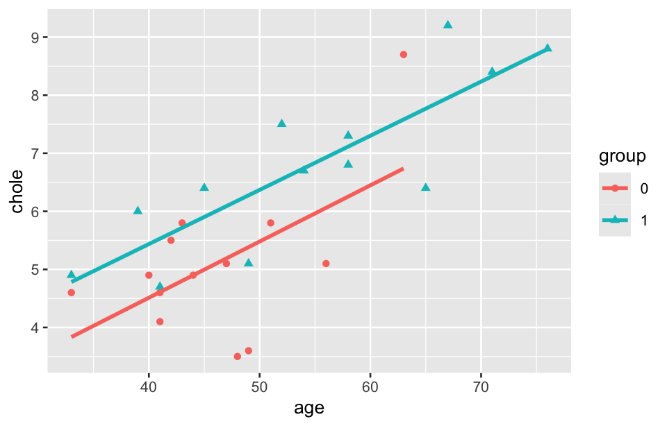

library(tidyverse)
library(emmeans)16 General linear model
The general linear model (GLM) is a statistical model used to examine the relationship between one or more independent variables (predictors) and a dependent variable (response). It is a broad framework that encompasses various types of regression models, where the dependent variable is continuous, and the independent variables can be continuous, categorical, or a mix of both.
16.1 Prerequisite
16.2 Some basics
The general form of the GLM can be formulated as:
Y = \beta X + \epsilon
where Y is the vector of dependent variables (n × 1, where n is the number of observations); X is the matrix of independent variables (called design matrix) (n × p, where p is the number of predictors); \beta is the vector of regression coefficients (p × 1), representing the effect of each predictor on the dependent variable; \epsilon is the error term (n × 1), assumed to be normally distributed with a mean of zero.
Below are some key types of general linear models:
- Simple linear regression: Analyzes the linear relationship between a single independent variable (predictor) and a continuous dependent variable (response). For example, examine how age affects systolic blood pressure.
- Multiple linear regression: Extends simple linear regression to include multiple independent variables. It explores the relationship between several predictors and a continuous dependent variable. For example, analyze how age, weight, and exercise frequency together influence cholesterol levels.
- Analysis of variance (ANOVA): Compares the means of two or more groups to understand whether there are significant differences between them. For example, compare blood pressure across different treatment groups (e.g., drug A, drug B and control).
- Analysis of covariance (ANCOVA): Combines ANOVA with regression. It includes both categorical and continuous independent variables to understand their effects on the dependent variable while controlling for the covariates. For example, study how treatment (categorical) affects blood pressure while controlling for weight (continuous).
- Multivariate analysis of variance (MANOVA): Extendes ANOVA to include multiple dependent variables. It tests whether mean differences exist between groups across more than one outcome variable. For example, investigate the effect of diet on both blood pressure and cholesterol simultaneously.
- Repeated measures ANOVA: Analyzes data where the same subjects are measured multiple times under different conditions or at different time points. For example, measure blood pressure before and after treatment in the same subjects.
- Generalized linear model: Extends the GLM to accommodate dependent variables that are not normally distributed, such as binary, count, or categorical outcomes. This includes logistic regression and Poisson regression.
In summary, the GLM framework encompasses a variety of statistical models depending on the nature of the independent and dependent variables, making it a versatile tool for analyzing different types of data.
16.3 GLM for comparison of two sample means
When comparing the means of two independent groups, the GLM approach is typically used. This can be conceptualized as an extension of a two-sample t-test but framed within a regression-based framework.
Model setup
The goal is to compare the means of two samples to see if there is a significant difference between them. The model equation can be written as:
Y = \beta_0 + \beta_1 X + \epsilon
where Y is the outcome (dependent variable), X is the binary variable (independent variable) representing group membership (e.g., 1 for group 1 and 2 for group 2), \beta_0 is the intercept representing the mean of group A, and \beta_1 is the coefficient, representing the difference in means between group A and group B, \epsilon is the error term, accounting for variation in Y not explained by X.
In this setup, the GLM compares the means of the two groups via the estimate for \beta_1.
Hypothesis
H_0: There is no difference in means between the two groups (\beta_1 = 0).
H_1: There is a significant difference in means between the two groups (\beta_1 \neq 0).
Example 1:
Reanalyze the Example 3 in Chapter 7 using general linear model approach.
df <- read_csv("datasets/ex16-01.csv", col_types = list(grp = col_factor())) Here’s how you can implement this using the lm() function, which fits a linear model.
lm(x ~ grp, data = df) |> summary()#>
#> Call:
#> lm(formula = x ~ grp, data = df)
#>
#> Residuals:
#> Min 1Q Median 3Q Max
#> -0.11000 -0.05125 0.00000 0.05125 0.11000
#>
#> Coefficients:
#> Estimate Std. Error t value Pr(>|t|)
#> (Intercept) 0.77000 0.02516 30.607 3.16e-14 ***
#> grp2 -0.13125 0.03558 -3.689 0.00243 **
#> ---
#> Signif. codes: 0 '***' 0.001 '**' 0.01 '*' 0.05 '.' 0.1 ' ' 1
#>
#> Residual standard error: 0.07116 on 14 degrees of freedom
#> Multiple R-squared: 0.4929, Adjusted R-squared: 0.4567
#> F-statistic: 13.61 on 1 and 14 DF, p-value: 0.00243The mean of group 1 (intercept) is 0.77, the difference between the means of group 1 and group 2 (group coefficient) is -0.13125. The p-value is 0.00243, suggesting that there is a statistically significant difference between the means of the two groups.
The GLM approach fits a linear regression model to test for differences in means. This approach can be generalized to multiple groups or covariates, allowing more complex analyses. Two-sample t-test is a simpler, direct method for testing the difference between two means. It’s equivalent to the GLM approach when no other covariates are included. Both methods will give the same results, but the GLM approach provides a framework for extending to more complex models.
16.4 GLM for comparison of multiple sample means
ANOVA is a special case of GLM used when the dependent variable is continuous and the independent variables are categorical. GLM provides a flexible framework for comparing multiple sample means. Here we only consider the comparison of three sample means.
Model setup
The model equation can be written as:
Y = \beta_0 + \beta_1 X_1 + \beta_2 X_2 + \epsilon
where Y is the outcome (dependent variable), X_1 and X_2 are dummy variables (also called indicator variables) used to encode the group memberships of the samples. Typically, if there are three groups, you can create two dummy variables to compare the means: The group 1 is the reference group where both X_1 = 0 and X_2 = 0. X_1 = 1 if the observation is from group 2, and 0 otherwise. X_2 = 1 if the observation is from group 3, and 0 otherwise. \beta_0 is the intercept representing the mean of group 1 (reference group), \beta_1 is the coefficient representing the difference in means between group 1 and group 2, and \beta_2 is the coefficient representing the difference in means between group 1 and group 3, \epsilon is the error term.
Thus, the GLM compares the mean of the reference group (encoded by the intercept \beta_0) with the other two groups through the coefficients \beta_1 and \beta_2.
Hypothesis
H_0: There is no difference in means among the three groups (\beta_1 = \beta_2 = 0).
H_1: There is a difference in means among the three groups (At least one of the \beta_1 or \beta_2 \neq 0).
Example 2:
Reanalyze the Example 1 in Chapter 8 using general linear model approach.
df <- read_csv("datasets/ex16-02.csv", col_types = list(group = col_factor())) lm(diff_tri ~ group, data = df) |> summary()#>
#> Call:
#> lm(formula = diff_tri ~ group, data = df)
#>
#> Residuals:
#> Min 1Q Median 3Q Max
#> -1.4002 -0.5206 -0.1021 0.6013 1.7260
#>
#> Coefficients:
#> Estimate Std. Error t value Pr(>|t|)
#> (Intercept) 2.9602 0.1178 25.134 < 2e-16 ***
#> group2 -0.0920 0.1666 -0.552 0.582
#> group3 -0.7562 0.1666 -4.540 1.37e-05 ***
#> ---
#> Signif. codes: 0 '***' 0.001 '**' 0.01 '*' 0.05 '.' 0.1 ' ' 1
#>
#> Residual standard error: 0.7449 on 117 degrees of freedom
#> Multiple R-squared: 0.1734, Adjusted R-squared: 0.1593
#> F-statistic: 12.27 on 2 and 117 DF, p-value: 1.449e-05The model uses group 1 as the reference category (since it’s not listed), and estimates the differences in diff_tri between groups 2 and 3 compared to group 1.
- Intercept (group 1): The intercept represents the estimated mean of diff_tri for group 1, which is 2.9602. This is the baseline value when group = 1. The very small p-value (< 2e-16) indicates that this estimate is significantly different from zero.
- group 2 coefficient: The estimate for group2 is -0.0920, meaning the average difference between group 2 and group 1 is -0.092. Group 2 has a slightly lower diff_tri compared to group 1. The p-value (0.582) indicates that this difference is not statistically significant, as the value is much greater than typical significance levels (e.g., 0.05).
- group 3 coefficient: The estimate for group3 is -0.7562, indicating that group 3 has a lower average diff_tri by 0.756 units compared to group 1. The p-value (1.37e-05) is highly significant (below 0.001), suggesting that the difference between group 3 and group 1 is statistically significant.
To compare group 2 and group 3, you can either perform pairwise comparisons with emmeans, or relevel the reference group in the model. Here are the code blocks for the two methods.
lm(diff_tri ~ group, data = df) |>
emmeans(pairwise ~ group)#> $emmeans
#> group emmean SE df lower.CL upper.CL
#> 1 2.96 0.118 117 2.73 3.19
#> 2 2.87 0.118 117 2.63 3.10
#> 3 2.20 0.118 117 1.97 2.44
#>
#> Confidence level used: 0.95
#>
#> $contrasts
#> contrast estimate SE df t.ratio p.value
#> group1 - group2 0.092 0.167 117 0.552 0.8455
#> group1 - group3 0.756 0.167 117 4.540 <.0001
#> group2 - group3 0.664 0.167 117 3.988 0.0003
#>
#> P value adjustment: tukey method for comparing a family of 3 estimates# Relevel the factor so that group 2 is the reference group
df |>
mutate(group = relevel(group, ref = "2")) |>
lm(diff_tri ~ group, data = _) |>
summary()#>
#> Call:
#> lm(formula = diff_tri ~ group, data = mutate(df, group = relevel(group,
#> ref = "2")))
#>
#> Residuals:
#> Min 1Q Median 3Q Max
#> -1.4002 -0.5206 -0.1021 0.6013 1.7260
#>
#> Coefficients:
#> Estimate Std. Error t value Pr(>|t|)
#> (Intercept) 2.8683 0.1178 24.353 < 2e-16 ***
#> group1 0.0920 0.1666 0.552 0.581774
#> group3 -0.6643 0.1666 -3.988 0.000116 ***
#> ---
#> Signif. codes: 0 '***' 0.001 '**' 0.01 '*' 0.05 '.' 0.1 ' ' 1
#>
#> Residual standard error: 0.7449 on 117 degrees of freedom
#> Multiple R-squared: 0.1734, Adjusted R-squared: 0.1593
#> F-statistic: 12.27 on 2 and 117 DF, p-value: 1.449e-05These methods will give you the direct difference between the two groups, along with p-values for significance.
16.5 Analysis of covariance
Analysis of covariance (ANCOVA) combines both analysis of variance (ANOVA) and linear regression. It is used to compare the means of dependent variables across different groups while controlling for the effects of one or more continuous covariates (independent variables that are not of primary interest but may influence the outcome). By accounting for covariates, ANCOVA reduces the error variance, thus increasing the statistical power of the test.
The general form of the ANCOVA model is:
Y = \mu + \beta X + \tau G + \epsilon
where Y is the dependent variable (outcome of interest), X is the covariate, G represents the groups or factors (categorical independent variable), \mu is the overall mean, \beta is the regression coefficient for the covariate, \tau is the effect of the groups on the outcome variable, and \epsilon is the residual error.
16.5.1 ANCOVA assumptions
ANCOVA Assumptions are critical to ensure the validity of the results. These assumptions are similar to those in ANOVA and linear regression but include additional considerations related to covariates. Here are the key assumptions:
Linearity
The relationship between the covariate(s) and the dependent variable should be linear across all levels of the independent variable (grouping factor). In other words, the effect of the covariate should consistently increase or decrease the dependent variable in a straight-line fashion.
How to check: Scatterplots of the covariate against the dependent variable, stratified by group, can be used to visually check for linear relationships.
Homogeneity of regression slopes
The slopes of the regression lines (representing the relationship between the covariate and the dependent variable) must be the same for all groups. This ensures that the covariate affects each group in the same way. If this assumption is violated, it indicates an interaction between the covariate and the group factor.
How to check: Include an interaction term between the covariate and group in the model. If the interaction is significant, the assumption is violated.
model <- aov(outcome ~ group * covariate, data = data) summary(model)Normality
The residuals (differences between observed and predicted values) of the dependent variable should be normally distributed. This assumption ensures that the error terms follow a normal distribution across all levels of the independent variable.
How to check: Use a normal Q-Q plot or conduct the Shapiro-Wilk test to check the normality of residuals.
shapiro.test(residuals(model))Independence of observations
The observations should be independent of one another. This means that there is no correlation or dependency between the values of the dependent variable within or between groups.
How to check: Ensure that the data collection process was designed to avoid dependency between observations (e.g., no repeated measures or clustering without proper adjustments).
Homogeneity of variance
The variances of the dependent variable should be equal across all groups. This is similar to the ANOVA assumption of homogeneity of variances.
How to check: Use Levene’s test or Bartlett’s test for homogeneity of variances.
rstatix::levene_test(data = data, outcome ~ group)Covariate independence of treatment effects
The covariate should be independent of the group factor, meaning the covariate should not differ significantly across the groups. If the covariate is not balanced across groups, it can introduce bias into the results.
How to check: Test whether the covariate is significantly different between groups, for example using an ANOVA or t-test depending on the number of groups.
summary(aov(covariate ~ group, data = data))
Violating these assumptions can lead to biased or invalid results, so it’s important to check each assumption before interpreting the results of ANCOVA.
Example 3:
A study aims to investigate whether there is a difference in serum cholesterol between adults with normal weight and those who are overweight. During a health examination, 13 individuals from two groups (normal weight and overweight) were randomly selected, and their cholesterol levels were measured. Additionally, cholesterol levels are also related to age. The study data can be accessed from the download button below. Compare the two sample means of the cholesterol level.
df <- read_csv("datasets/ex16-03.csv", col_types = list(group = col_factor())) You can conduct ANCOVA using the aov() or lm() functions:
aov(chole ~ group + age, data = df) |>
summary()#> Df Sum Sq Mean Sq F value Pr(>F)
#> group 1 18.61 18.615 20.34 0.000158 ***
#> age 1 24.38 24.380 26.64 3.13e-05 ***
#> Residuals 23 21.05 0.915
#> ---
#> Signif. codes: 0 '***' 0.001 '**' 0.01 '*' 0.05 '.' 0.1 ' ' 1df |>
group_by(group) |>
summarise(
m = mean(chole)
)#> # A tibble: 2 × 2
#> group m
#> <fct> <dbl>
#> 1 0 5.09
#> 2 1 6.78lm(chole ~ group + age, data = df) |>
summary()#>
#> Call:
#> lm(formula = chole ~ group + age, data = df)
#>
#> Residuals:
#> Min 1Q Median 3Q Max
#> -1.7807 -0.4706 0.0270 0.6301 2.0068
#>
#> Coefficients:
#> Estimate Std. Error t value Pr(>|t|)
#> (Intercept) 0.76053 0.88016 0.864 0.3965
#> group1 0.89549 0.40572 2.207 0.0376 *
#> age 0.09417 0.01824 5.162 3.13e-05 ***
#> ---
#> Signif. codes: 0 '***' 0.001 '**' 0.01 '*' 0.05 '.' 0.1 ' ' 1
#>
#> Residual standard error: 0.9566 on 23 degrees of freedom
#> Multiple R-squared: 0.6714, Adjusted R-squared: 0.6428
#> F-statistic: 23.49 on 2 and 23 DF, p-value: 2.769e-06The coefficients for the model show the estimated effect of each predictor on cholesterol levels:
(Intercept): The intercept is estimated at 0.76053, which is the expected cholesterol level when both predictors (group and age) are zero. However, the intercept’s significance is not high (p = 0.3965).
group1: The coefficient for group1 is 0.89549. This indicates that individuals in group 1 have, on average, a cholesterol level that is 0.89549 mmol/L higher than those in the reference group (the normal weight). The p-value (0.0376) suggests this effect is statistically significant at the 0.05 level, indicating a meaningful difference in cholesterol levels between the groups.
age: The coefficient for age is 0.09417, suggesting that for each additional year of age, the cholesterol level increases by approximately 0.09417 mmol/L. The p-value for age (3.13e-05) is highly significant, indicating a possible relationship between age and cholesterol levels.
ggplot(df, aes(x = age, y = chole, shape = group, color = group)) +
geom_point() +
geom_smooth(method = "lm", se = F) #> `geom_smooth()` using formula = 'y ~ x'